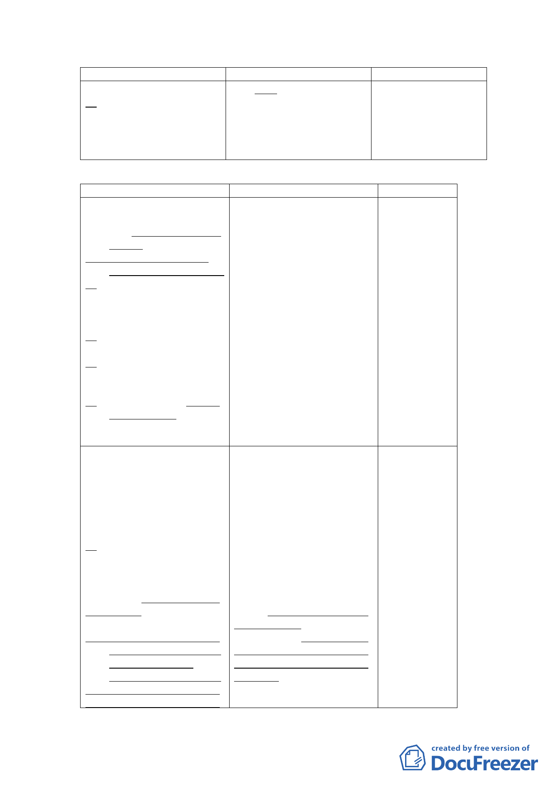

新計畫
二、前述實施方式進度及經
費，得視計畫推動之實
際需要進行調整。
原計畫
出。
三、前述實施方式進度及經
費，得視計畫推動之實
際需要進行調整。
說明
四、 修訂細部計畫內容：
新計畫
原計畫
說明
貳、計畫目標
貳、計畫目標
1.配合社會福
一、社會福利設施更新與轉 一、社會福利設施更新與轉 利設施之規
型，建構完整之照顧服
型，建構銀髮園區。
劃，修正相關
務系統。
文字。
二、配合推動公營住宅政
2.考量公有土
策，健全住宅租賃市場。
地有效利
三、朝大眾運輸導向規劃， 二、朝大眾運輸導向規劃， 用，並落實推
並配合捷運信義線東延
並配合捷運信義線東延 動公營住宅
段設站，順暢交通動線
段設站，順暢交通動線 政策，新增本
系統。
系統。
案計畫目標
四、促進土地有效利用，帶 三、促進土地有效利用，帶 內容。
動地區整體發展。
動地區整體發展。
3.因商業區、社
五、配置地區性公共設施， 四、配置地區性公共設施， 會福利設施
提升地區生活環境品
提升地區生活環境品
用地係修正
質。
質。
採分別開
六、引進商業設施，提供鄰 五、引進商業設施，提升社 發，故修正相
里性商務需求。
會福利事業自償經營能 關文字。
力。
4.修正條次。
参、計畫原則與構想
一、土地使用計畫
(一)社會福利設施用地－提
供銀髮族、身心障礙
者、一般社會大眾所需
福利服務
以現有福德平宅基地及
原廣慈博愛院北側基地為
主，規劃約2.9公頃之社會福
利設施用地，除維持既有社
會救助功能，照顧老人及身
心障礙者，並提供相關福利
服務設施，提供市民運動休
憩場所。
(二)社會福利設施用地－規
劃公營住宅，滿足市民
基本居住需求。
配合本市推動公營住宅
政策，增加住宅供給並提升
居住品質，滿足市民居住需
参、計畫原則與構想
1.為保留後續
一、土地使用計畫
規劃彈性，修
(一)社會福利設施用地-提 正社會福利
供銀髮族、身心障礙者 設施規劃構
及一般社會大眾所需福 想文字。
利服務
2.配合公營住
以現有福德平宅基地及 宅推動之計
廣慈博愛院北側基地為主， 畫目標，新增
規劃約2.9公頃之社會福利 於社會福利
設施用地，提供廣慈博愛院 設施用地規
及福德平宅既 有之社會救 劃公營住宅
助功能，照顧老人及身心障 相關構想。
礙者，並設置廣慈文物館及 3.本計畫停車
活力健康區，提供市民大眾 位之提供係
運動休憩場所，另外提供社 以滿足基地
福綜合中心、家暴中心、信 及地區停車
義托兒所及社會局所需公務 需求為主，未
使用空間。
來社會福利
設施用地、商
業區開發後
- 13 -